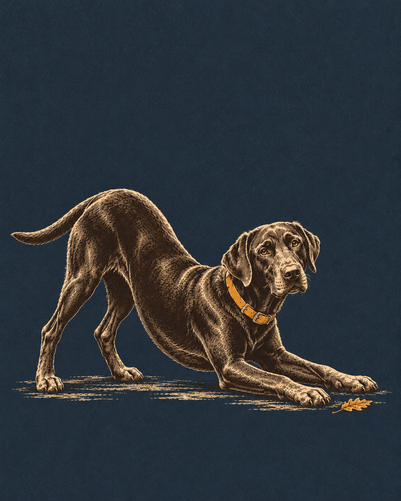

Tuesday's ChoiceFor the weekend of Sat 7 – Sun 8 November
Medoc Mountain, Without a Summit Campaign
An orange-blazed woodland loop above Little Fishing Creek: a modest walk, a picnic if the day allows, and plenty of time for Rupert to investigate.
· Weekend choice 1 of 2

Why This Week
The name promises a mountain; the better invitation is a small woodland circuit. The official Bluff Loop is 1.75 miles and rated easy to moderate, not a strenuous summit expedition. Follow its orange triangles from the signed day-use trail network, allowing time for access walking and unhurried sniffing. This is a new eastern option after last week’s Sandhills and Uwharrie outings. The drive is substantial for a short walk, so make it an easy-paced day rather than a mileage errand. Wet leaves can conceal roots and uneven slopes; Little Fishing Creek is scenery, not an invitation for Rupert to swim. This morning’s dated NWS forecast favours Sunday: mostly sunny near 69F, versus a slight chance of Saturday showers before 1 p.m. Recheck before the drive; a forecast is not a trail inspection.
Conditions
Saturday: A slight chance of rain showers before 1pm. Mostly sunny, with a high near 73. Sunday: Mostly sunny, with a high near 69. Saturday night: Partly cloudy, with a low around 48. Sunday night: A slight chance of rain showers after 7pm. Mostly cloudy, with a low around 47.
If it turns
Thunder, strong wind, flooding, unsafe footing or an official closure: Postpone. A different exposed trail or a picnic is not a storm alternative. Check official status and NWS again before leaving.
Forecast snapshot · issued Tue 3 Nov, 05:57 ET · National Weather Service — current point forecast
Follow the Orange Triangles
The named Bluff Loop is 1.75 miles, officially easy to moderate and hiking only. Use the official map at junctions; the three-mile Summit Loop is a different outing.
Leave Room for Pauses
Allow roughly 1¼–2 hours with sniffing and access walking. A picnic can round out the day, but turn back for unsafe footing or weather; do not add a harder loop to justify the drive.
If Plans Change
- CloserA shorter beginning1 h 50 – 2 h 10 drive
- Bigger dayThe full named loop1.75 mi · 1 h 50 – 2 h 10 drive
- AlternativePicnic, if the day allows1 h 50 – 2 h 10 drive
Memory Prompt
Record which part of the named route you actually walked and what made Rupert stop to investigate.
Sources
- NC State Parks — current status, access, hours and pets retrieved 2026-11-03
- Official route table retrieved 2026-11-03
- Official parking and trail map retrieved 2026-11-03
- Official park news retrieved 2026-11-03
- National Weather Service — current point forecast snapshot retrieved 2026-11-03 · link shows the current forecast
Place details as recorded Tue 3 Nov. They stay as published even if the place's record is corrected later.